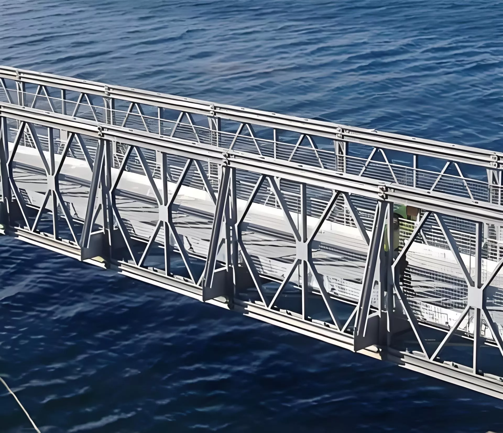

CROP MONITORING ROBOT

Autonomous drone with soil moisture and NDVI sensing to guide irrigation decisions.
Equipped with multispectral or NDVI (Normalized Difference Vegetation Index) cameras to measure crop health. GPS and autopilot software guide them along programmed paths over fields. As they fly, they capture images and sensor readings about plant growth, soil moisture, and stress levels.
This device was and is ideal for farmers during the pandemic as they weren't allowed to visit their farms. It is also ideal for farmers with large scale fields or elderly farmers as it reduces the need to walk entire fields daily.
CARE ASSISTANT ROBOT

Telepresence cart prototype for medicine delivery and feedback note. A pre-programmed hospital service robot, designed to assist with logistics and patient support.
It uses cameras, lidar, or ultrasonic sensors to navigate hospital hallways safely, avoiding people and obstacles. It runs on mapping software that lets it move between rooms (like H409, H410) without human guidance.
ASSISTIVE GLASSES

A wearable assistive headset designed for visually impaired users.
Smart glasses that included a small digital camera that captured what is happening around the user and converted the visual input to signals that could be understood by the brain. Using neurofeedback principles, our system monitored the user's brainwave activity, particularly alpha and beta waves associated with calmness and focus. For accurate data interpretation, the device needed to calm the user down to a calm level similar to that of a chess player.
This device helps the blind or low-vision users navigate their environment safely.
SPEECH ASSISTIVE DEVICE

A wearable voice prosthesis or speech‑assistive device for people who have lost their natural voice.
A speech-generating electrolarynx neck device that can stick to the user's neck, converting vibrations into a robotic-sounding voice. Using an adhesive pad or lightweight collar depending on preference, it reads the user's muscle movements, subtle vibration patterns, resonance from the vocal tract, and airflow changes using sensitive vibration and pressure sensors to collect vocal print data and output natural-sounding speech.
This device was designed to help people with cerebral palsy, stroke, or non-verbal users communicate effectively, reducing frustration and enabling an easier social or work life. For people who lost speech later in life, it preserves their original voice profile before speech loss.
MODULAR FLOATING DRIVEWAYS / BRIDGE

A raisable bridge
Prefabricated steel and concrete modules bolted together to form the span. The bridge rests on concrete abutments or piers built on either side of the river or stream, keeping the deck elevated above normal water levels.
Because it's raised above normal water, the bridge is not affected by rising water levels. It has sensors which detect how large the flood is and how high it needs to self-raise.